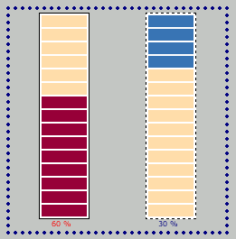

examples TOC
examples TOC$Date$
 Introduction
IntroductionThis example will run a more than once progress bar at same time. It will show two vertical progress bar running in opposite sides (down to up and reverse) with different increment step.
[Top]
 PHP script
PHP scriptBuild the first progress bar
<?php
$bar1 = new HTML_Progress(HTML_PROGRESS_BAR_VERTICAL);
$bar1->setAnimSpeed(100);
$bar1->setIdent('PB1');
$bar1->setIncrement(10);
$bar1->setBorderPainted(true);
?>
Build the second progress bar
<?php
$bar2 = new HTML_Progress(HTML_PROGRESS_BAR_VERTICAL);
$bar2->setAnimSpeed(100);
$bar2->setIdent('PB2');
$bar2->setIncrement(5);
$bar2->setBorderPainted(true);
?>
Loop to run both progress bars
<?php
do {
$bar1->display();
$bar2->display();
if ($bar2->getPercentComplete() == 1) {
break; // the progress bar has reached 100%
}
if ($bar1->getPercentComplete() < 1) {
$bar1->incValue();
}
$bar2->incValue();
} while(1);
?>
[Top]
 Render options
Render options active-color = #970038 inactive-color = #FFDDAA width = 50 height = 13
width = 1 color = #000000
font-size = 8 color = #FF0000 background-color = #C3C6C3 align = center valign = bottom
active-color = #3874B4 inactive-color = #FFDDAA width = 50 height = 13
width = 1 style = dashed color = #000000
font-size = 8 color = navy background-color = #C3C6C3 align = center valign = bottom
[Top]
 Output
Output
[Top]
 Play full example
Play full exampleRun the script below :
<?php
require_once 'HTML/Progress.php';
$bar1 = new HTML_Progress(HTML_PROGRESS_BAR_VERTICAL);
$bar1->setAnimSpeed(100);
$bar1->setIdent('PB1');
$bar1->setIncrement(10);
$bar1->setBorderPainted(true);
$ui1 =& $bar1->getUI();
$ui1->setFillWay('natural');
$ui1->setCellCount(15);
$ui1->setCellAttributes('active-color=#970038 inactive-color=#FFDDAA width=50 height=13');
$ui1->setBorderAttributes('width=1 color=#000000');
$ui1->setStringAttributes(array(
'font-size' => 8,
'color' => '#FF0000',
'background-color' => '#C3C6C3',
'align' => 'center',
'valign' => 'bottom'
));
$bar2 = new HTML_Progress(HTML_PROGRESS_BAR_VERTICAL);
$bar2->setAnimSpeed(100);
$bar2->setIdent('PB2');
$bar2->setIncrement(5);
$bar2->setBorderPainted(true);
$ui2 =& $bar2->getUI();
$ui2->setFillWay('reverse');
$ui2->setCellCount(15);
$ui2->setCellAttributes('active-color=#3874B4 inactive-color=#FFDDAA width=50 height=13');
$ui2->setBorderAttributes('width=1 style=dashed color=#000000');
$ui2->setStringAttributes(array(
'font-size' => 8,
'color' => 'navy',
'background-color' => '#C3C6C3',
'align' => 'center',
'valign' => 'bottom'
));
?>
<!DOCTYPE html
PUBLIC "-//W3C//DTD XHTML 1.0 Strict//EN"
"http://www.w3c.org/TR/xhtml1/DTD/xhtml1-strict.dtd">
<html xmlns="http://www.w3.org/1999/xhtml" xml:lang="en">
<head>
<title>Multiple Vertical ProgressBar example</title>
<style type="text/css">
<!--
<?php
echo $bar1->getStyle();
echo $bar2->getStyle();
?>
body {
background-color: #C3C6C3;
color: #000000;
font-family: Verdana, Arial;
}
table.container {
border: 1;
border-color: navy;
border-style: dotted;
cell-spacing: 4;
cell-padding: 10;
width: 25%;
// -->
</style>
<script type="text/javascript">
<!--
<?php echo $bar1->getScript(); ?>
//-->
</script>
</head>
<body>
<table class="container">
<tr>
<td width="50%" align="center">
<?php echo $bar1->toHTML(); ?>
</td>
<td width="50%" align="center">
<?php echo $bar2->toHTML(); ?>
</td>
</tr>
</table>
<?php
do {
$bar1->display();
$bar2->display();
if ($bar2->getPercentComplete() == 1) {
break; // the progress bar has reached 100%
}
if ($bar1->getPercentComplete() < 1) {
$bar1->incValue();
}
$bar2->incValue();
} while(1);
?>
</body>
</html>
[Top]